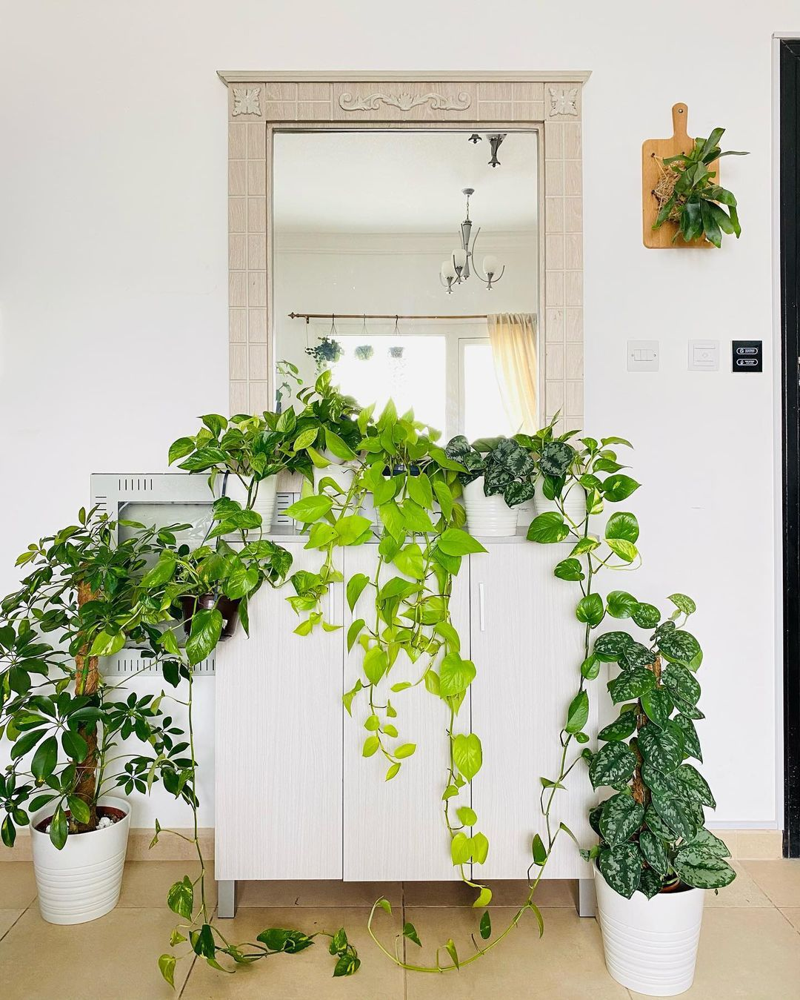
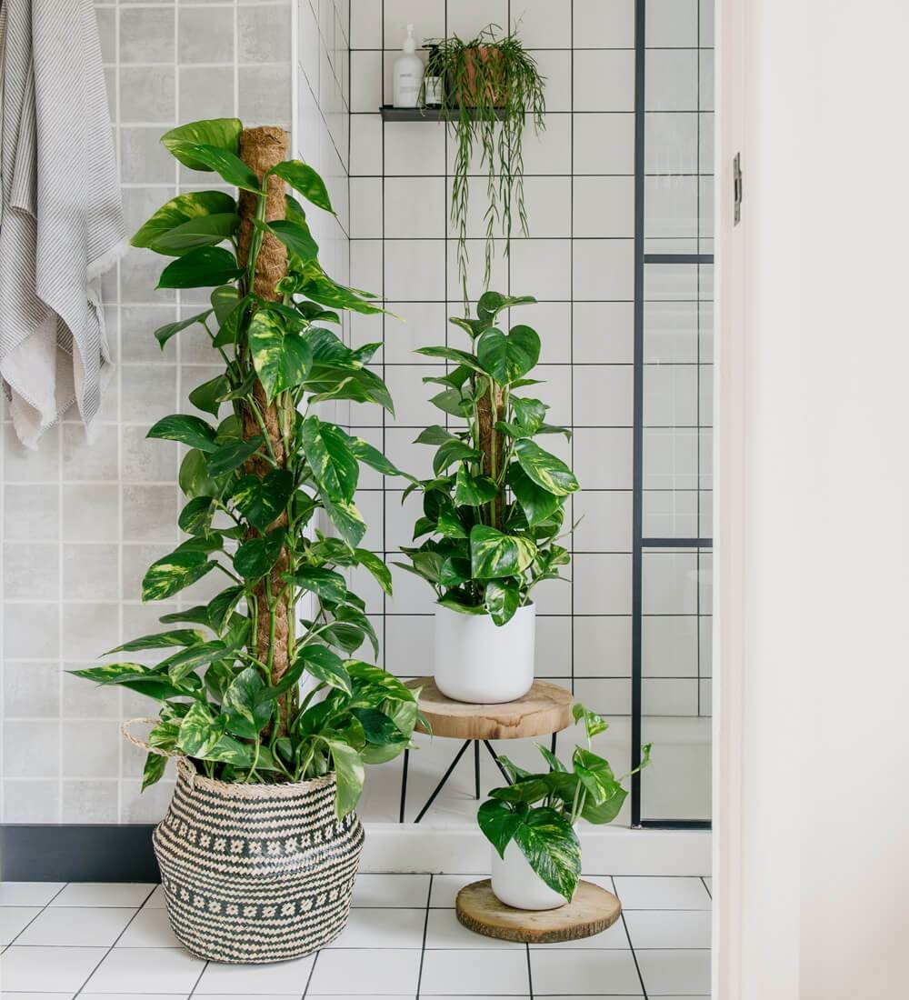
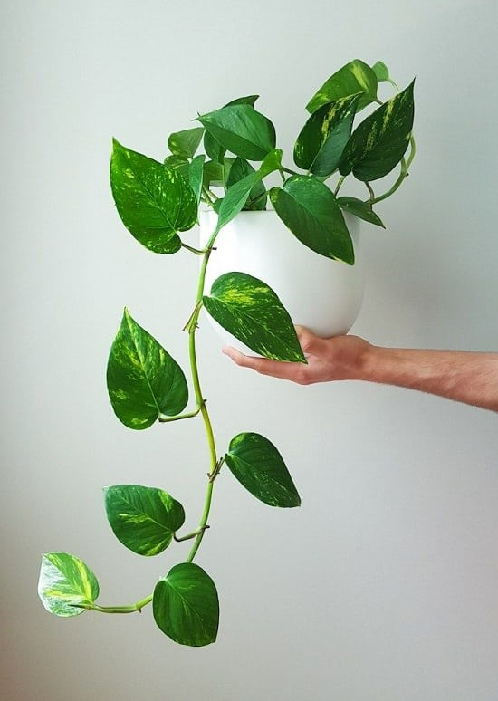

Pothos
Pothos are known for their durability and easy maintenance. These air-purifying plants can vine quite quickly, making them a beautiful table or hanging plant in short order. Alternatively, some people train their pothos to grow on a trellis or moss pole. However you choose to display your pothos plant, it's sure to be a beautiful addition to your space.
The pothos is a very easy-going plant and can be potted in any type of soil. It thrives in nutrient-rich soil but will do just fine in nutrient-poor mixes. This indoor or outdoor plant does well in a hanging basket or a regular pot. No matter what pot you choose, make sure that it has a drainage hole — pothos plants do not like to sit in wet soil.
The pothos plant can survive in a variety of light conditions. They grow the best in moderate indoor light, but can also survive in low light. Outdoors, the pothos plant will thrive in either shade or partial shade. Almost the only type of light the plants can't abide is direct sunlight. Too much sun will scorch the leaves, which may cause them to fall off.As a general rule, pothos plants should be watered every one to two weeks in warmer months and every two to three weeks in colder months. The soil should be kept moist, but be careful not to overwater. They do best when their soil is allowed to completely dry out in between waterings. Frequent misting will encourage healthy growth, and the humidity will keep the foliage bright.



Pothos plants do not have any special care requirements, but there are a variety of things you can to ensure your plant flourishes. Pothos are light feeders but can benefit from a balanced fertilizer once a month. You may also consider repotting your pothos if the roots begin to take the shape of the pot. You can then select a container one size up and replant it with fresh potting soil.